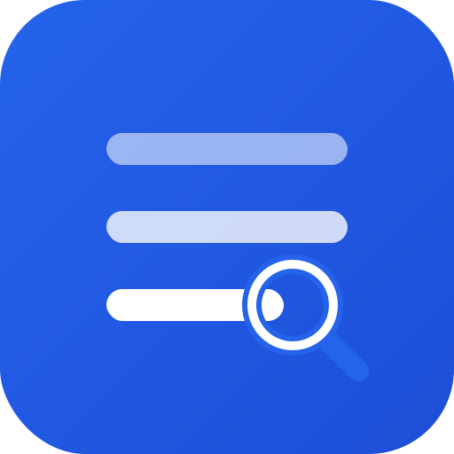

A personal tool for searching across multiple Gmail inboxes from one place.
Unified Inbox Search is a small, self-hosted application built and used by one person (its developer) to search, read, and lightly manage email across several of their own Gmail accounts without signing into each one separately. It runs entirely on that person's own computer — there is no shared server, no public sign-up, and no other users.
Only its developer, across Gmail accounts they themselves own and administer. It is not distributed, not offered to the public, and not intended for use by anyone else.